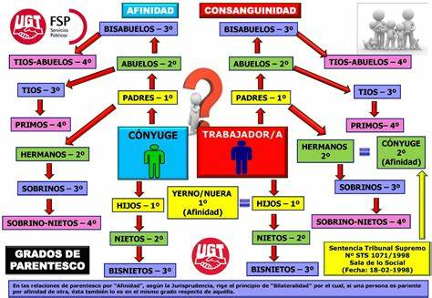

Normas y Parentesco
Las normas y el parentesco están intrínsecamente interconectados en la vida social y cultural de las sociedades humanas. Las normas, como reglas y expectativas sociales, regulan y organizan las relaciones entre individuos y grupos dentro de una sociedad. El parentesco, por otro lado, se refiere a las relaciones de familia y parentesco que estructuran la organización social y los roles dentro de una comunidad. Aquí exploraremos la relación entre las normas y el parentesco, y cómo estas dos dimensiones interactúan en diferentes contextos culturales.
Normas y Parentesco
1. Regulación de las Relaciones Familiares Las normas sociales establecen pautas para las relaciones dentro de la familia y el parentesco. Definen roles y expectativas para padres, hijos, hermanos, y otros parientes, regulando así la interacción y los comportamientos dentro de la unidad familiar.
2. Formas de Matrimonio y Alianzas Las normas culturales y sociales influyen en las prácticas matrimoniales y las alianzas entre familias. Estas normas pueden dictar quién puede casarse con quién, cómo se formalizan los matrimonios y qué implicaciones tienen las alianzas matrimoniales para la estructura social y económica de la comunidad.
3. Herencia y Transmisión de Propiedad Las normas relacionadas con la herencia y la transmisión de propiedad son importantes en las sociedades donde el parentesco determina la distribución de recursos y la autoridad. Estas normas pueden variar ampliamente, desde sistemas de herencia patrilineales hasta matrilineales, o incluso sistemas donde la propiedad se comparte de manera más igualitaria entre los miembros de la familia.
4. Responsabilidades y Obligaciones Familiares Las normas culturales y sociales también establecen responsabilidades y obligaciones específicas dentro de la familia extendida. Por ejemplo, en algunas culturas, los hijos pueden tener la responsabilidad de cuidar a sus padres ancianos, mientras que en otras, se espera que las familias extensas apoyen financieramente a sus miembros en momentos de necesidad.
Ejemplos de Normas y Parentesco en Diferentes Culturas
1. Sistema de Parentesco Hawaiano En el sistema de parentesco hawaiano, las relaciones familiares se clasifican de acuerdo con la edad y el género en lugar de los términos occidentales de "tío", "primo", etc. Las normas de parentesco hawaianas influyen en la organización social y en cómo se establecen las relaciones dentro de la comunidad.Claude Lévi-Strauss es la figura más destacada del estructuralismo en antropología. Sus trabajos más influyentes incluyen:
2. Sistema de Clan en África En muchas sociedades africanas, el parentesco se organiza en torno a clanes o linajes, con normas específicas que rigen las relaciones entre los miembros del clan. Estas normas pueden determinar las alianzas matrimoniales, los derechos de herencia y otras cuestiones relacionadas con el parentesco.
3. Sistemas de Herencia en Asia En algunas culturas asiáticas, como en China, Japón y Corea, las normas de herencia pueden estar fuertemente influenciadas por el sistema patrilineal, donde los bienes y la autoridad pasan de padre a hijo. Estas normas pueden tener un impacto significativo en la distribución de la riqueza y el poder dentro de la sociedad.
Conclusión
Las normas y el parentesco son aspectos fundamentales de la vida social y cultural de las sociedades humanas. Las normas regulan las relaciones y los comportamientos dentro de la familia y el parentesco, mientras que el parentesco estructura la organización social y define roles y responsabilidades dentro de la comunidad. Comprender la interacción entre las normas y el parentesco es crucial para comprender la complejidad y la diversidad de las relaciones humanas en diferentes contextos culturales.
Representación

Video
Bibliografía
- Radcliffe-Brown, A. R. (1922). The Andaman Islanders. Cambridge University Press.